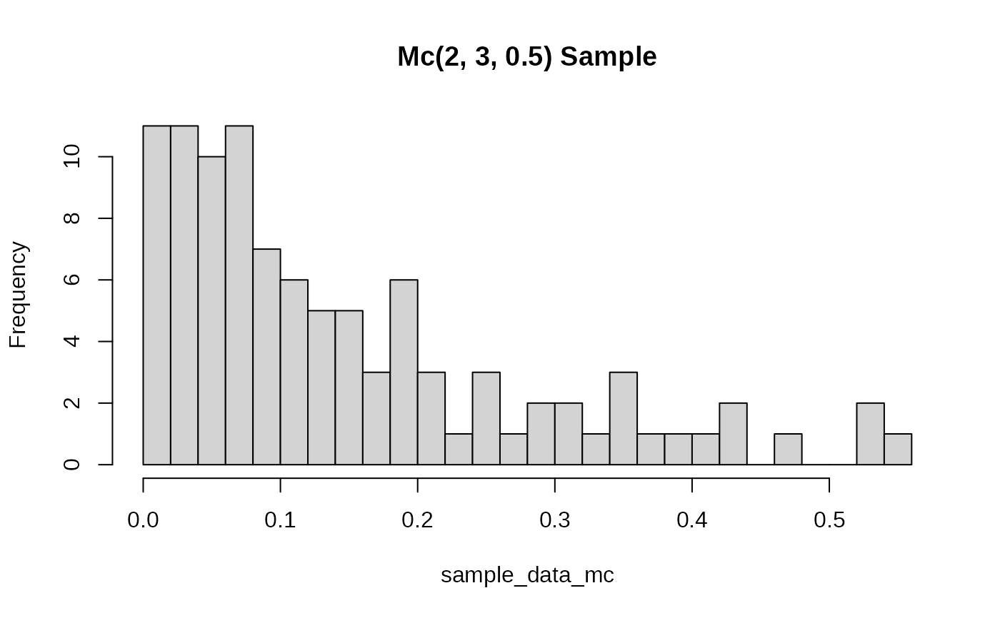

Gradient of the Negative Log-Likelihood for the McDonald (Mc)/Beta Power Distribution
Source:R/RcppExports.R
grmc.RdComputes the gradient vector (vector of first partial derivatives) of the
negative log-likelihood function for the McDonald (Mc) distribution (also
known as Beta Power) with parameters gamma (\(\gamma\)), delta
(\(\delta\)), and lambda (\(\lambda\)). This distribution is the
special case of the Generalized Kumaraswamy (GKw) distribution where
\(\alpha = 1\) and \(\beta = 1\). The gradient is useful for optimization.
Value
Returns a numeric vector of length 3 containing the partial derivatives
of the negative log-likelihood function \(-\ell(\theta | \mathbf{x})\) with
respect to each parameter:
\((-\partial \ell/\partial \gamma, -\partial \ell/\partial \delta, -\partial \ell/\partial \lambda)\).
Returns a vector of NaN if any parameter values are invalid according
to their constraints, or if any value in data is not in the
interval (0, 1).
Details
The components of the gradient vector of the negative log-likelihood (\(-\nabla \ell(\theta | \mathbf{x})\)) for the Mc (\(\alpha=1, \beta=1\)) model are:
$$ -\frac{\partial \ell}{\partial \gamma} = n[\psi(\gamma+\delta+1) - \psi(\gamma)] - \lambda\sum_{i=1}^{n}\ln(x_i) $$ $$ -\frac{\partial \ell}{\partial \delta} = n[\psi(\gamma+\delta+1) - \psi(\delta+1)] - \sum_{i=1}^{n}\ln(1-x_i^{\lambda}) $$ $$ -\frac{\partial \ell}{\partial \lambda} = -\frac{n}{\lambda} - \gamma\sum_{i=1}^{n}\ln(x_i) + \delta\sum_{i=1}^{n}\frac{x_i^{\lambda}\ln(x_i)}{1-x_i^{\lambda}} $$
where \(\psi(\cdot)\) is the digamma function (digamma).
These formulas represent the derivatives of \(-\ell(\theta)\), consistent with
minimizing the negative log-likelihood. They correspond to the relevant components
of the general GKw gradient (grgkw) evaluated at \(\alpha=1, \beta=1\).
References
McDonald, J. B. (1984). Some generalized functions for the size distribution of income. Econometrica, 52(3), 647-663.
Cordeiro, G. M., & de Castro, M. (2011). A new family of generalized distributions. Journal of Statistical Computation and Simulation,
(Note: Specific gradient formulas might be derived or sourced from additional references).
Examples
# \donttest{
# Assuming existence of rmc, llmc, grmc, hsmc functions for Mc distribution
# Generate sample data
set.seed(123)
true_par_mc <- c(gamma = 2, delta = 3, lambda = 0.5)
sample_data_mc <- rmc(100, gamma = true_par_mc[1], delta = true_par_mc[2],
lambda = true_par_mc[3])
hist(sample_data_mc, breaks = 20, main = "Mc(2, 3, 0.5) Sample")

# --- Find MLE estimates ---
start_par_mc <- c(1.5, 2.5, 0.8)
mle_result_mc <- stats::optim(par = start_par_mc,
fn = llmc,
gr = grmc, # Use analytical gradient for Mc
method = "BFGS",
hessian = TRUE,
data = sample_data_mc)
# --- Compare analytical gradient to numerical gradient ---
if (mle_result_mc$convergence == 0 &&
requireNamespace("numDeriv", quietly = TRUE)) {
mle_par_mc <- mle_result_mc$par
cat("\nComparing Gradients for Mc at MLE estimates:\n")
# Numerical gradient of llmc
num_grad_mc <- numDeriv::grad(func = llmc, x = mle_par_mc, data = sample_data_mc)
# Analytical gradient from grmc
ana_grad_mc <- grmc(par = mle_par_mc, data = sample_data_mc)
cat("Numerical Gradient (Mc):\n")
print(num_grad_mc)
cat("Analytical Gradient (Mc):\n")
print(ana_grad_mc)
# Check differences
cat("Max absolute difference between Mc gradients:\n")
print(max(abs(num_grad_mc - ana_grad_mc)))
} else {
cat("\nSkipping Mc gradient comparison.\n")
}
#>
#> Comparing Gradients for Mc at MLE estimates:
#> Numerical Gradient (Mc):
#> [1] -0.0090383310 -0.0008723594 -0.0061479778
#> Analytical Gradient (Mc):
#> [1] -0.0090383286 -0.0008723581 -0.0061479812
#> Max absolute difference between Mc gradients:
#> [1] 3.31495e-09
# Example with Hessian comparison (if hsmc exists)
if (mle_result_mc$convergence == 0 &&
requireNamespace("numDeriv", quietly = TRUE) && exists("hsmc")) {
num_hess_mc <- numDeriv::hessian(func = llmc, x = mle_par_mc, data = sample_data_mc)
ana_hess_mc <- hsmc(par = mle_par_mc, data = sample_data_mc)
cat("\nMax absolute difference between Mc Hessians:\n")
print(max(abs(num_hess_mc - ana_hess_mc)))
}
#>
#> Max absolute difference between Mc Hessians:
#> [1] 1.039143e-08
# }